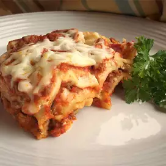

lasanga

A delicious italian classic!
ingredients
1 lb ground beef
1 lb italian sausage
1/2 cup warm water
spices and shit
other shit
directions
mix stuff together
cook meat and stuff
layer and put in oven